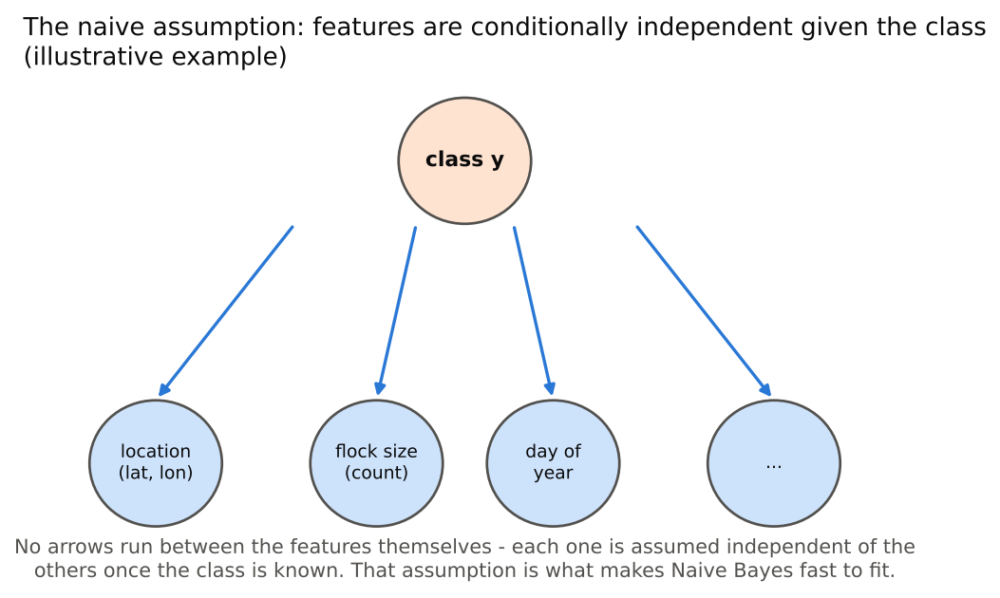
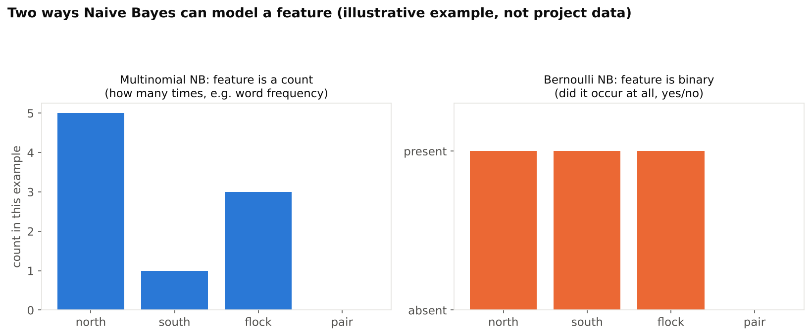
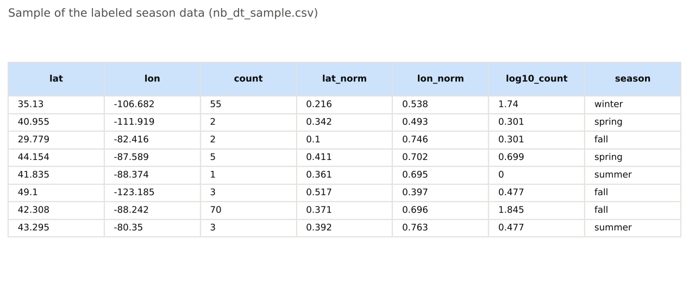
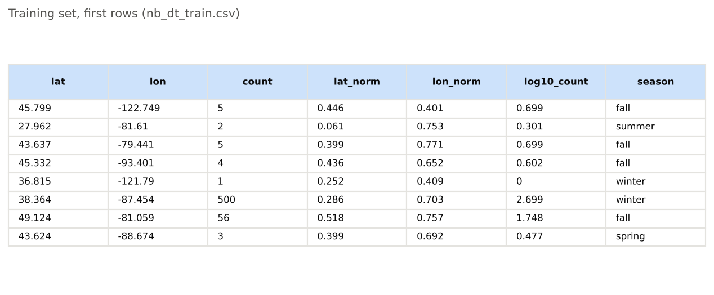
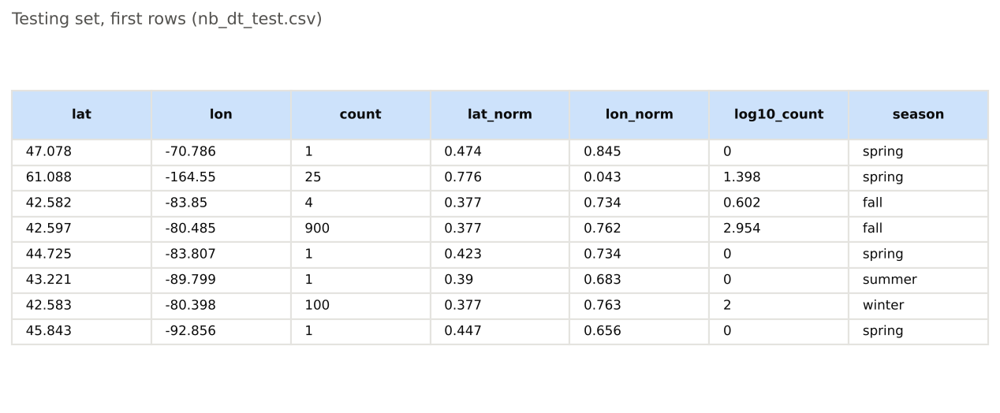
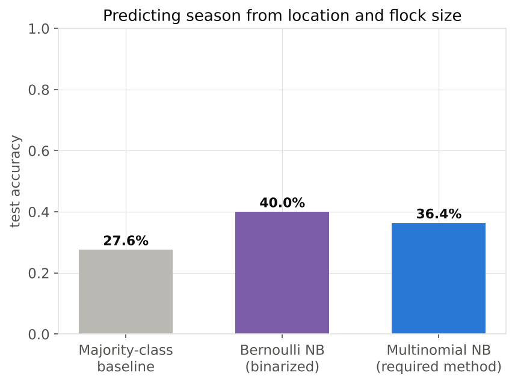
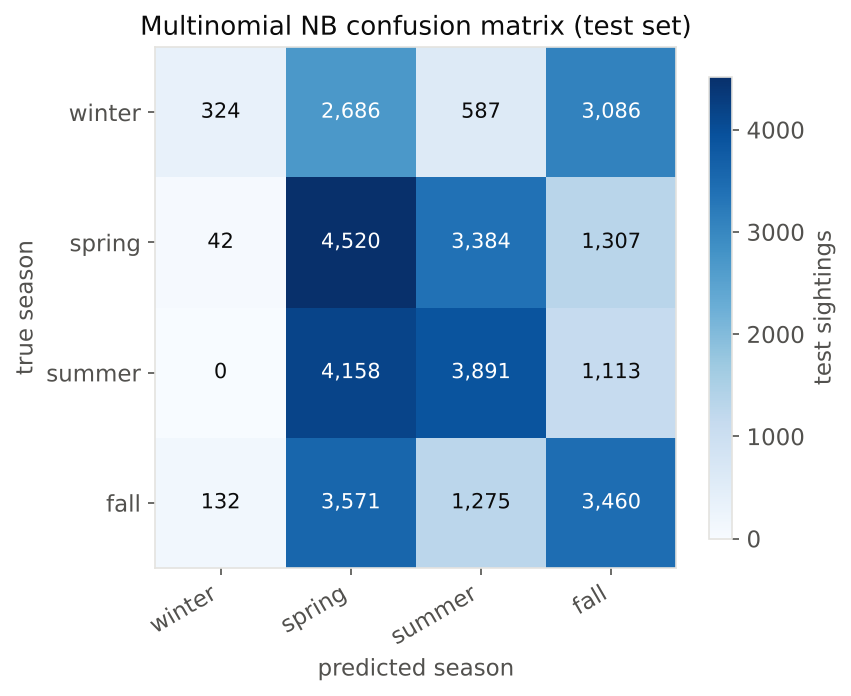
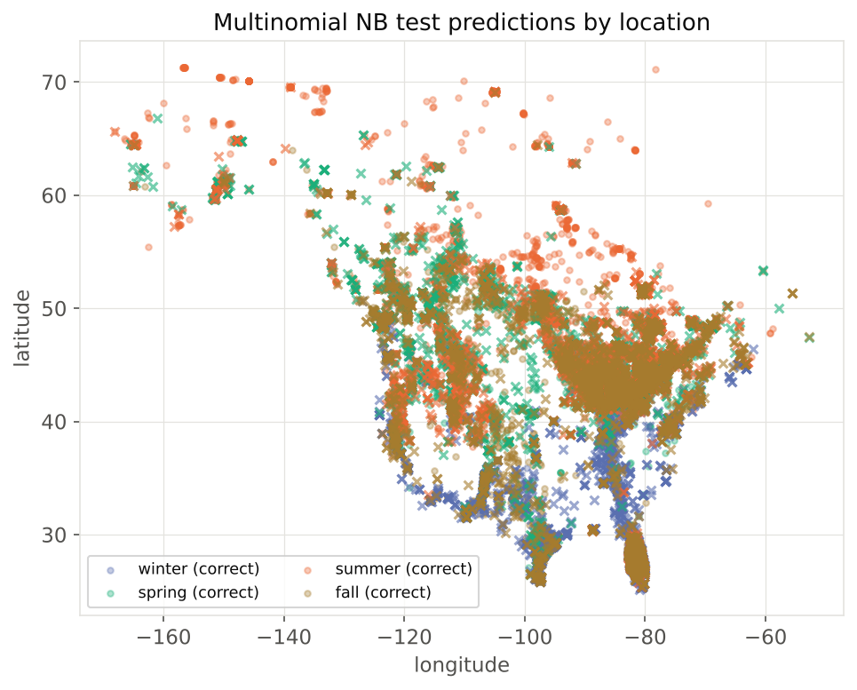

Naive Bayes
Naive Bayes is a supervised classification method: it is trained on sightings that already carry a label, and it is judged afterward by how well it predicts that label on sightings it never saw during training. Here it is asked to predict the season a sighting happened in, using only where it was and how many birds were counted, never when.
OverviewBayes rule and the decision rule. Naive Bayes picks the class with the highest probability given the data, P(y=c | x), but that quantity is hard to estimate directly. Bayes' rule flips it into something that can be estimated from a training table: the posterior P(y=c | x) is proportional to the prior P(y=c) (how common class c is) times the likelihood P(x | y=c) (how well this particular x fits class c's rows), since the denominator P(x) is the same constant for every class and does not change which one wins. The decision rule is then just arg max over classes c of prior times likelihood, computed for every candidate season and sorted.
The naive assumption. Estimating the full likelihood P(x | y=c) for a feature vector with several features is, in general, hard: it would need enough training rows to have seen every combination of feature values within every class, and real datasets never do. The "naive" step assumes the features are conditionally independent of each other once the class is fixed, which turns that one hard joint estimate into a product of small, easy ones, P(x1|y=c) times P(x2|y=c) times P(x3|y=c). The assumption is usually wrong, since location and flock size are not really independent of each other even within one season, but the classifier only needs to rank the classes correctly, not estimate the probabilities exactly, which is why Naive Bayes keeps working reasonably well anyway.


code/08_concept_diagrams2.py has been run.

code/08_concept_diagrams2.py has been run.Multinomial vs. Bernoulli NB. This tab is only required to use the standard multinomial NB, so that is the primary method below, but Bernoulli NB is defined here too since it is not otherwise covered. Multinomial NB models each feature as a non-negative count or frequency, drawn under each class from a multinomial distribution, which is the textbook fit for word counts in text or, as used here, continuous measurements that have been cast as non-negative numeric quantities. Bernoulli NB instead treats every feature as a strict yes/no event: for text that usually means whether a word appears in a document at all, ignoring how many times, and it also explicitly penalizes a class for a feature that is absent, not just rewarding one where it is present, which multinomial NB does not do. The usual rule of thumb favors Gaussian NB for ordinary continuous measurements and multinomial NB for genuine counts; the features used below are continuous (scaled location and a log-scaled flock size) rather than counts in the word-frequency sense, so using multinomial NB here is really an exercise in the required method, with its fit to this specific data checked honestly against a simple baseline in the Results below.
Plan for discovery. The question here is a direct test of how much a sighting's location and flock size alone give away about the time of year: given only where a sighting happened and how many birds were in it, never when, can a classifier recover which season it was? Keeping day of year out of the feature list on purpose is explained further in Data Prep below.
Data PrepSupervised methods need labeled data, and the label has to be something the model is never also given as a feature, or the task becomes circular. observations_clean.csv already carries a season column (winter, spring, summer, or fall), assigned from each sighting's month. Because season is defined directly from the month, handing the model the month, day of year, or week as a feature would make the classification trivial and would not test anything interesting, so those columns are deliberately left out. Instead this tab predicts season from three columns only: lat_norm and lon_norm (location, scaled 0-to-1) and log10_count (flock size on a log scale). All three are non-negative, which multinomial NB requires mathematically, since it cannot accept negative feature values.
The 167,678 labeled sightings were split once into a training set and a disjoint testing set, 80 percent (134,142 rows) for training and 20 percent (33,536 rows) held out for testing, using scikit-learn's train_test_split with stratify on season so that all four seasons keep roughly their original proportions in both pieces. The split is disjoint by construction: every row lands in exactly one of the two sets, never both, which matters because a model tested on rows it already trained on would look far more accurate than it actually is. This exact split is saved to nb_dt_train.csv and nb_dt_test.csv by code/06_naive_bayes.py, so the same training and testing rows can be loaded again rather than rebuilt from scratch.


code/06_naive_bayes.py has been run.

code/06_naive_bayes.py has been run.

code/06_naive_bayes.py has been run.Written in Python with pandas and scikit-learn (MultinomialNB, BernoulliNB, train_test_split, confusion_matrix). Full code: code/06_naive_bayes.py (the overview diagrams above come from code/08_concept_diagrams2.py).
Accuracy against a baseline. Always guessing the most common season in the training data (spring) would be right 27.6 percent of the time on the test set. Multinomial NB reaches 36.4 percent, a real but modest improvement, about 9 points above guessing. Bernoulli NB, fit on the same three features after binarizing each one at its training median (above or below the typical latitude, longitude, and flock size), does slightly better at 40.0 percent, which suggests that for this particular data, a simple "far north or not, big flock or not" style of question carries about as much signal as treating the scaled values as frequencies, consistent with the Overview's point that these features are not really count data to begin with.


code/06_naive_bayes.py has been run.Where multinomial NB gets confused. The confusion matrix below shows a lopsided pattern: winter is predicted correctly only 4.8 percent of the time it actually occurs (324 of 6,683 winter sightings), even though when the model does predict winter it is usually right (65.1 percent precision). Winter sightings cluster tightly in a handful of specific wintering refuges, so the model can describe that region precisely, but it rarely chooses to call anything winter at all, defaulting instead to spring or fall. Spring and summer are confused with each other often in both directions (4,158 true-summer sightings predicted spring; 3,384 true-spring sightings predicted summer), which matches the broad overlap in where cranes are seen during the breeding months, hard to pin down by location alone once day of year is not available.


code/06_naive_bayes.py has been run.

code/06_naive_bayes.py has been run.Location and flock size alone, with no information about the date, carry real but limited signal about season: multinomial NB beats blind guessing by about 9 points and Bernoulli NB by about 12. What the model learns is really a geography of the wintering range, a small set of specific southern refuges that it can recognize with 65 percent precision whenever it is willing to name them, set against a much larger area used across spring, summer, and fall that it struggles to tell apart without knowing the time of year. That winter-is-precise-but-rare pattern is itself informative: it says the hardest part of separating seasons by location is not the wintering birds, who are geographically distinctive, but the broad overlap in where cranes show up during the rest of the year. The slightly stronger showing of Bernoulli NB over the required multinomial method also lines up with the Overview's caveat that these features are continuous measurements cast as counts, not real frequency data, so a simpler above/below-threshold view of the same information does just as well or better. Overall the result is a believable floor rather than a strong classifier: real signal exists in location and flock size, but recovering season from them alone, without knowing the date, remains a genuinely hard problem for a method that weighs each feature independently.